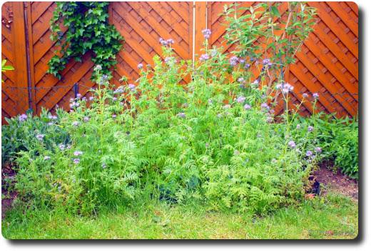
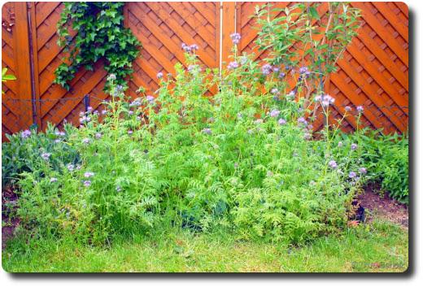

Blumen für Bienen und Hummeln
Dieses Jahr hat es unser Bienenfreund ("Phacelia") sehr leicht gehabt, denn der milde Winter hat die Samen aus dem letzten Jahr verschont. So steht er jetzt schon seit Anfang Mai in voller Blüte und bietet Nahrung für unsere kleinen fliegenden Besucher.
 
